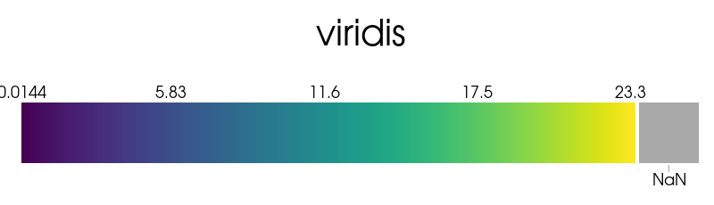

Note
Click here to download the full example code
Lookup Tables#
Demonstrate the usage of a lookup table within PyVista
The pyvista.LookupTable can be used to have fine-tuned control over
the mapping between a pyvista.DataSet’s scalars and RGBA colors.
import pyvista as pv
from pyvista import examples
# download an example dataset
bracket = examples.download_fea_bracket().cell_data_to_point_data()
bracket
Default Color Map - Lookup Table#
First, let’s plot using the default color map, “viridis”. Internally, PyVista
will automatically create a lookup table to map the scalars (stored here
within point_data) to RGBA colors. This is shown here as a nested attribute
to the pyvista.DataSetMapper and it has a helpful repr method:
pl = pv.Plotter()
actor = pl.add_mesh(bracket)
actor.mapper.lookup_table

LookupTable (0x15f9f23d160)
Table Range: (0.014368999749422073, 23.26799964904785)
N Values: 256
Above Range Color: None
Below Range Color: None
NAN Color: Color(name='darkgray', hex='#a9a9a9ff')
Log Scale: False
Color Map: "viridis"
Plot the Lookup Table#
You can also plot lookup table to see the mapping between the scalar values (here, between 0 and 23.3) and RGBA colors.
pl = pv.Plotter()
actor = pl.add_mesh(bracket)
actor.mapper.lookup_table.plot()

- 
Plot the DataSet#
Let’s plot the dataset using the automatically generated lookup table.
pl = pv.Plotter()
pl.add_mesh(bracket)
pl.show()
Create a Custom Lookup Table using a Matplotlib Color Map#
Here we create a lookup table with a narrow table range (same as clim)
and color values above and below the range.
lut = pv.LookupTable(cmap='magma')
lut.scalar_range = (5, 15)
lut.below_range_color = pv.Color('grey', opacity=0.5)
lut.above_range_color = 'r'
lut.plot()
Plot the bracket with the custom colormap#
You can set assign the lookup table when using add_mesh with cmap=.
pl = pv.Plotter()
actor = pl.add_mesh(bracket, cmap=lut, lighting=False)
pl.show()
Create a Custom Lookup Table using VTK’s Methods#
If you want to create a completely unique color map, you can use attributes
like pyvista.LookupTable.hue_range and
pyvista.LookupTable.value_range to create your own lookup table.
lut = pv.LookupTable()
lut.value_range = (0.35, 1) # dark grey to white
lut.hue_range = (0.35, 0.7) # green to cyna
lut.saturation_range = (0.75, 0.5) # reduce saturation near the upper end
lut.alpha_range = (0.0, 0.9) #
lut.scalar_range = (2, 18)
lut.plot()
Plot the bracket with the custom colormap#
Assign this custom color map to the plotter and disable lighting to improve the plot.
pl = pv.Plotter()
actor = pl.add_mesh(bracket, cmap=lut, lighting=False)
pl.show()
Custom colormap with widgets#
Here we plot the scalars and dynamically change the lookup table through widgets. We create several overlapping single slider widgets to simulate a double ended slider widget.
This example just controls the alpha channel.
pl = pv.Plotter()
actor = pl.add_mesh(bracket, cmap=lut, lighting=False)
pl.add_text('Alpha Range Demo')
def set_min_alpha(min_value):
max_value = lut.alpha_range[1]
if min_value > max_value:
# force the movement of the maximum value
max_value = min_value
pl.slider_widgets[1].GetRepresentation().SetValue(max_value)
lut.alpha_range = (min_value, max_value)
def set_max_alpha(max_value):
min_value = lut.alpha_range[0]
if max_value < min_value:
# force the movement of the minimum value
min_value = max_value
pl.slider_widgets[0].GetRepresentation().SetValue(min_value)
lut.alpha_range = (min_value, max_value)
# create two overlapping slider bars by hiding the tube of the second
pl.add_slider_widget(
set_min_alpha,
(0, 1),
value=lut.alpha_range[0],
event_type='always',
title='Alpha Range',
tube_width=0.003,
)
pl.add_slider_widget(
set_max_alpha, (0, 1), value=lut.alpha_range[1], event_type='always', tube_width=0.0
)
pl.show()
Control Several Lookup Table Attributes#
Demonstrate the use of several slider bar widgets with lookup table callbacks.
# Create a new lookup table with oranges
lut = pv.LookupTable()
lut.value_range = (0.3, 0.75)
lut.hue_range = (0.0, 0.095)
lut.saturation_range = (0.0, 0.67)
lut.alpha_range = (0.0, 1.0)
lut.scalar_range = (2, 18)
scalars_rng = (bracket.active_scalars.min(), bracket.active_scalars.max())
def make_double_slider(attr, idx):
"""Create a double slider for a given lookup table attribute."""
def set_min(min_value):
max_value = getattr(lut, attr)[1]
if min_value > max_value:
# force the movement of the maximum value
max_value = min_value
pl.slider_widgets[idx * 2 + 1].GetRepresentation().SetValue(max_value)
setattr(lut, attr, (min_value, max_value))
if attr == 'scalar_range':
actor.mapper.scalar_range = getattr(lut, attr)
def set_max(max_value):
min_value = getattr(lut, attr)[0]
if max_value < min_value:
# force the movement of the minimum value
min_value = max_value
pl.slider_widgets[idx * 2].GetRepresentation().SetValue(min_value)
setattr(lut, attr, (min_value, max_value))
if attr == 'scalar_range':
actor.mapper.scalar_range = getattr(lut, attr)
if attr == 'scalar_range':
rng = scalars_rng
else:
rng = (0, 1)
# create two overlapping slider bars by hiding the tube of the second
pl.add_slider_widget(
set_min,
rng,
value=getattr(lut, attr)[0],
event_type='always',
title=' '.join(attr.split('_')).capitalize(),
tube_width=0.003,
pointa=(0.6, 0.9 - 0.165 * idx),
pointb=(0.9, 0.9 - 0.165 * idx),
)
pl.add_slider_widget(
set_max,
rng,
value=getattr(lut, attr)[1],
event_type='always',
tube_width=0.0,
pointa=(0.6, 0.9 - 0.165 * idx),
pointb=(0.9, 0.9 - 0.165 * idx),
)
pl = pv.Plotter()
actor = pl.add_mesh(bracket, cmap=lut, lighting=False)
make_double_slider('alpha_range', 0)
make_double_slider('hue_range', 1)
make_double_slider('value_range', 2)
make_double_slider('saturation_range', 3)
make_double_slider('scalar_range', 4)
pl.camera_position = [(9.021, 5.477, 7.780), (-0.679, 1.349, 0.874), (-0.498, -0.228, 0.836)]
cpos = pl.show(return_cpos=True)
Total running time of the script: ( 0 minutes 1.855 seconds)